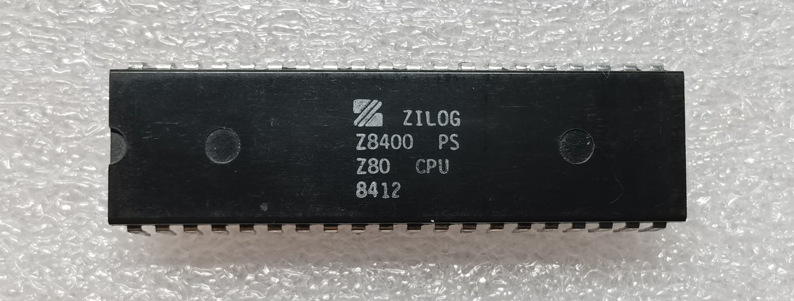
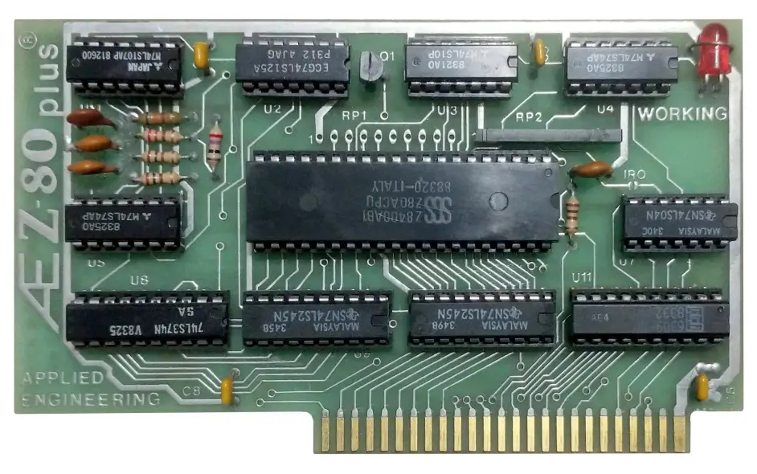
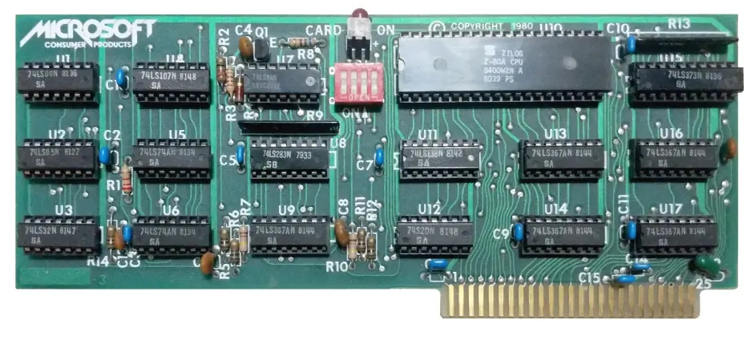
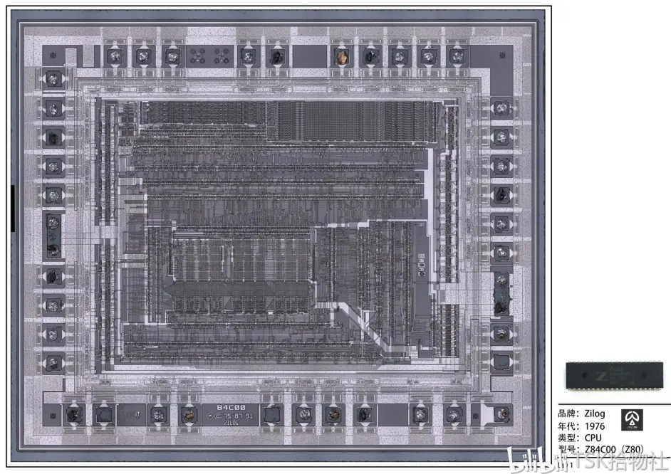

时代脚印 —— Zilog Z80 CPU
1976年美国Zilog公司推出的微处理器Z840004，Z840006和Z840008因其卓越的性能，强大的输入/出接口能力，快速的运算速度（Z840008时钟频率可达8MHz，同时期的其他产品如Intel的8085、Motorola的M6802等时钟频率为2~5MHz），品种多样的外设支持而迅速被业内人士关注。Zilog公司的这类微处理器通常被叫做Z80微处理器或Z80微机。
Z80单板机具有体积小，外设搭配灵活，运行可靠等特点，因此在以后的十几年时间里，Z80单板机被广泛的应用于PC机接口及扩展和各种工业、控制领域，尤其是在美国和日本得到了极大的发展。我国自上世纪80年代末引入，因为其所具有的第三代计算机的优良特点而迅速被市场所接受，小到家用电器，红白游戏机，大到工业采集系统，自动控制装置，电动机及传动等都有大量的使用和应用。各类大中型院校也开设了Z80微处理器的课程，Z80微处理器和Z80单板机的研究和应用在我国具有广泛的基础。

Zilog Z80 CPU，简称Z80，是一款8位微处理器，与英特尔公司出产的8080微处理器的指令集兼容。Z80可执行为8080所写的CP/M操作系统，所以过去在apple II兼容机盛行的年代，很多人都爱在电脑内加装z80扩展卡，并透过它来运行WordStar、VisiCalc等商业软件。


Z80也广泛用在一些家用电脑（当时还未使用个人电脑这一名词）中，其中较知名的例如Tandy / Radio Shack的TRS-80。TRS-80 Model II，第二代的TRS-80
Game Gear游戏机使用Zilog Z80
Z80也大量用于微电脑学习机，例如宏碁公司的第一款微电脑产品：小教授一号（MPF I）。
原始Z80的最高频率是2.5 MHz，Z80A则可以使用到4 MHz频率，后来推出的Z80B最高可以使用6 MHz频率。之后还有8MHz、10MHz的版本。 Z80原使用NMOS制程，后来也有生产CMOS制程的Z80。后期使用的编号，NMOS者为Z8400，CMOS者为Z84C00。
任天堂的经典掌机GameBoy所使用的CPU——DMG，就是Z80的定制版本。
Z80微处理器使用了NMOS的大规模IC工艺，可以说是当时的Intel 8080的改进产品，为了达成上述设计思想，Z80单板机拥有很多支持的外设，而其支持的汇编指令也多达158条（Intel 8080只有72条），应用非常灵活。
因此，硬件的专门设计+软件的灵活设计构成Z80微处理器的最显著设计特点，也使之成为了80年代最成功的8位CPU之一。
Z80系统的核心图，有兴趣的可供收藏：

作者：BIGic微视界